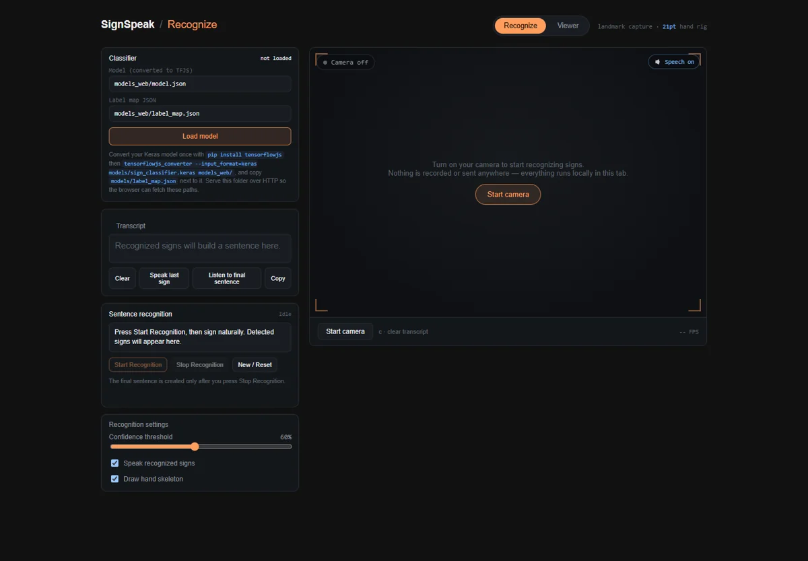
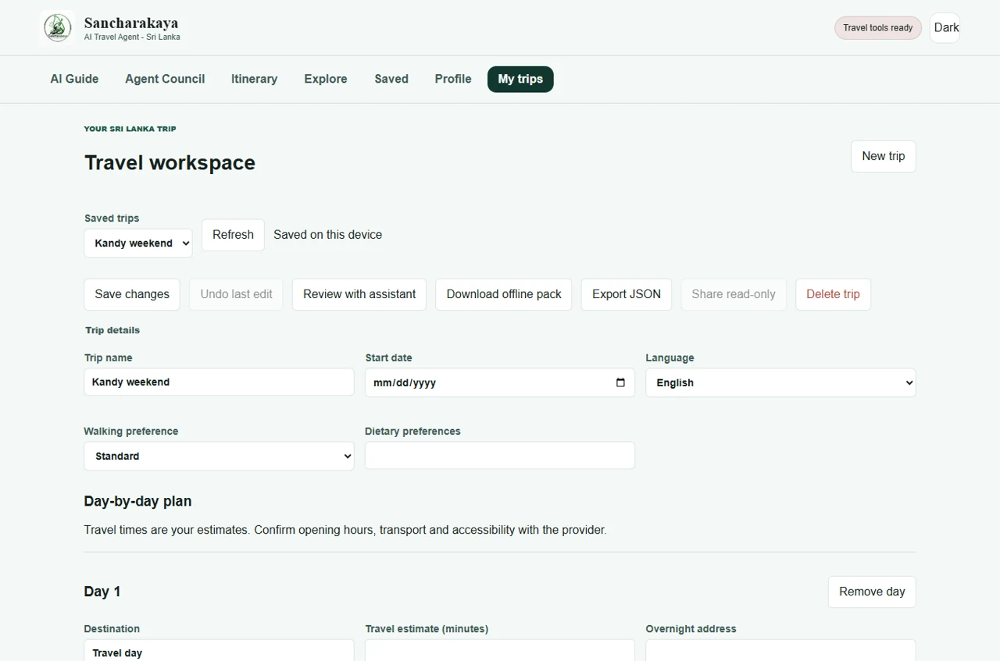
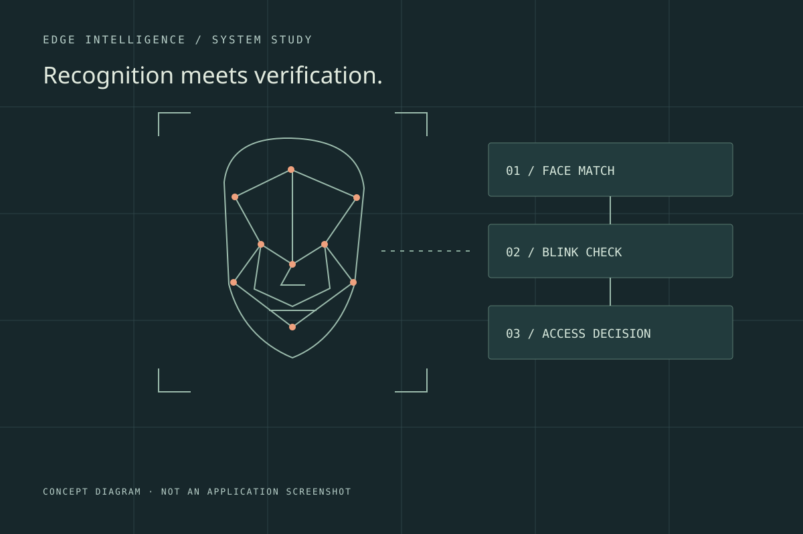
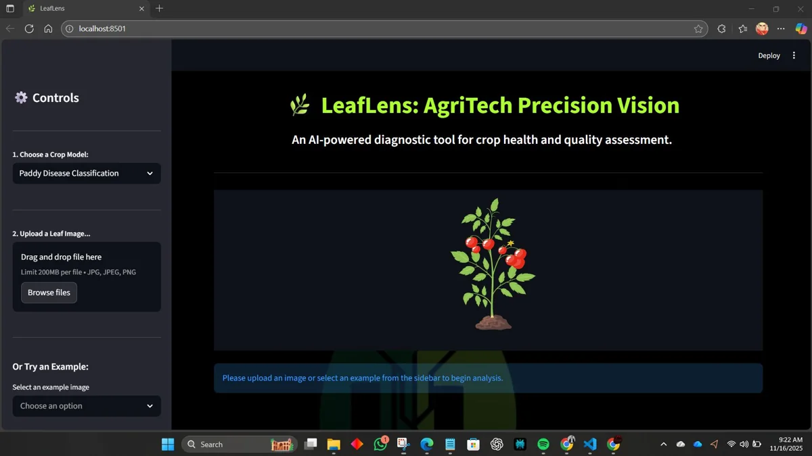
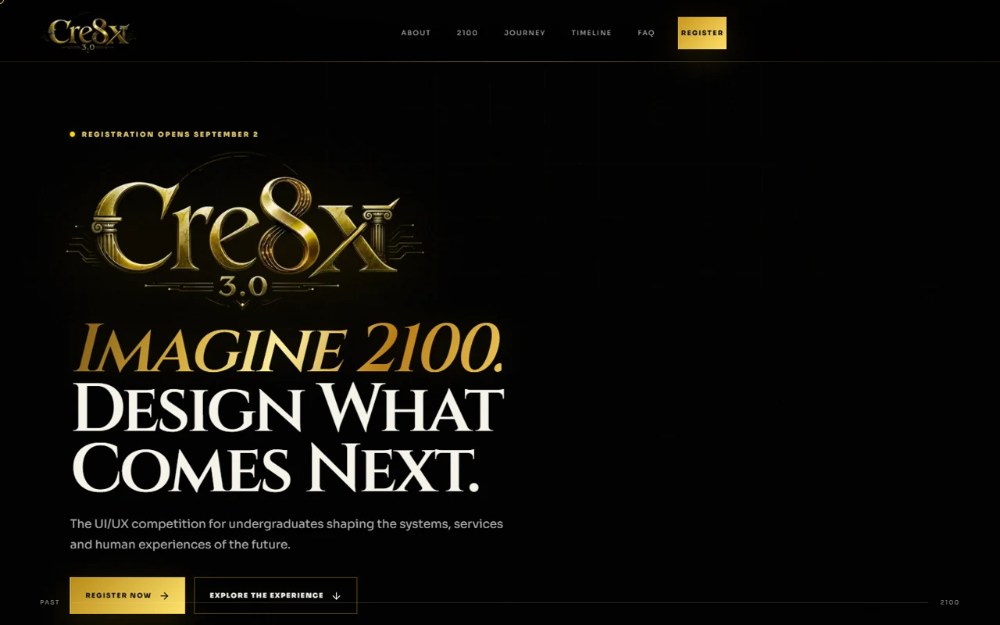
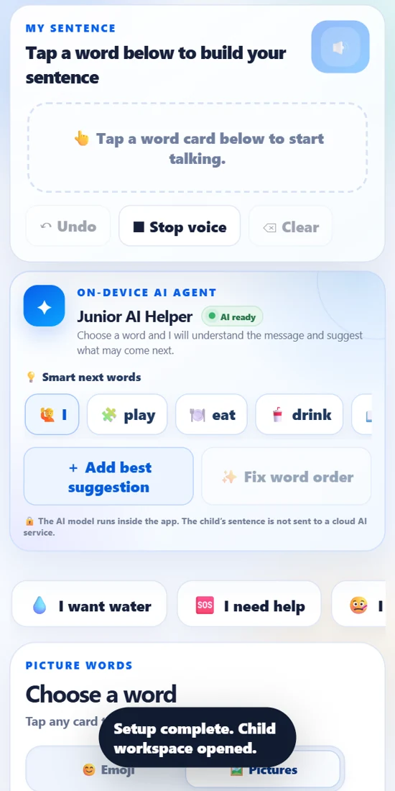
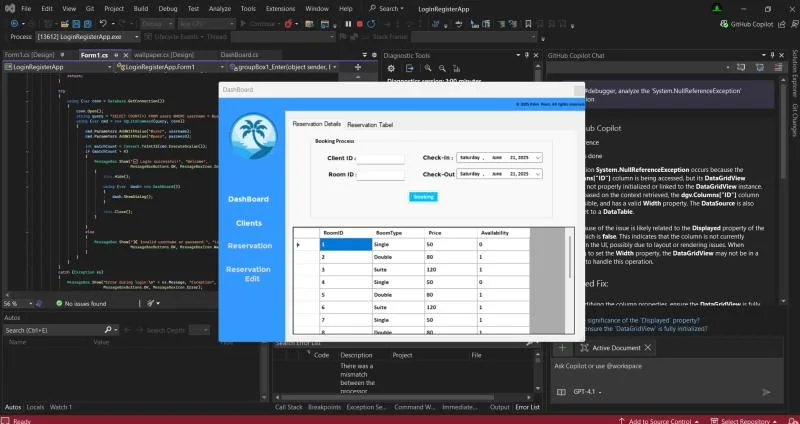
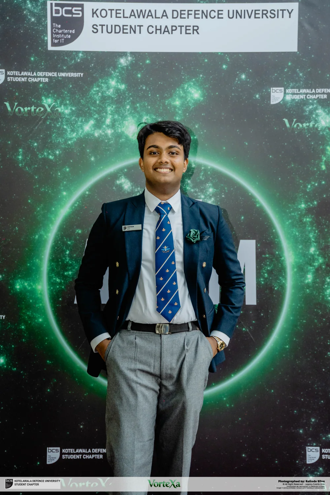
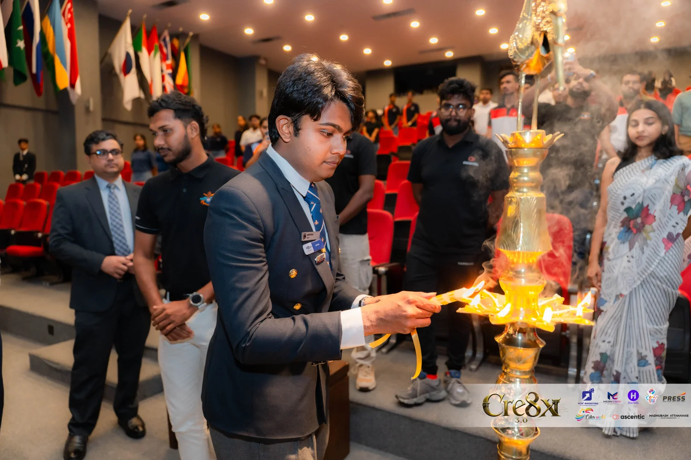

Applied AI

Bringing sign recognition, speech, and an articulated 3D hand into one learning experience.
Selected for the Data Odyssey 2026 final round with Team Quantum-X.
Computer Engineering undergraduate · KDU
Building software and applied AI prototypes in Sri Lanka.
Finalist at AI Challenge Sri Lanka, Data Odyssey and CHYPER 4.0 in 2026.
Open to internships · 2026/27
Selected work
Computer vision, travel tools, hardware and web applications.

Bringing sign recognition, speech, and an articulated 3D hand into one learning experience.
Selected for the Data Odyssey 2026 final round with Team Quantum-X.

A Sri Lanka travel companion connecting personalized itineraries, local context, and AI assistance.
35 local tests passed. A browser walkthrough verified itinerary generation, reopening a saved trip and exporting an offline trip pack.
Sample trip editing, schedule checks and an offline export.

A webcam-based authentication prototype combining face embeddings, blink checks, and a local control interface.
The prototype combines ArcFace identity matching and a separate blink check in one local workflow.

A crop-health prototype that turns leaf images into paddy disease and tea-quality assessments.
One Streamlit app demonstrates two workflows: paddy disease classification and tea quality assessment.

A voice-driven Windows assistant connecting conversation, camera input, and practical desktop controls.
The Flask dashboard shows camera and system telemetry alongside voice-controlled Windows actions.

A cinematic competition website backed by participant registration and organizer workflows.
A public event site pairs interactive storytelling with participant and organizer workflows.

A child-friendly sentence builder with speech output and locally running word suggestions.
Released a v2.0 prototype APK with on-device suggestions and Android text-to-speech.

A Windows application bringing customer records, rooms, and reservations into a single workflow.
The booking flow validates the client and availability, saves the reservation and updates the room state.
Competition results
2nd runner-up
IEEE Computer Society of KDU · Oct 2025
Grand finale finalist
Team The Kernel Krew · Sep 2026
View evidence (opens in a new tab)Finalist
Team Quantum-X · SignSpeak · Aug 2026
View project ↗Finalist
IEEE WIE Student Branch of KDU · Sep 2026
View evidence (opens in a new tab)Top 20 finalist
IEEE Computer Society of KDU · Sep 2025
Alison
Cisco Networking Academy
Cisco Networking Academy
Cisco Networking Academy
University of Moratuwa · Credential zvrZ1bu7Nb
University of Moratuwa · Credential 0NJhYjmvEi
IEEE · Participation
Professional work
Jan–Nov 2023
Sampath Bank PLC · Head Office
Assisted with system maintenance and troubleshooting and supported the IT department’s development teams.
Education venture
OULU Academy · Sri Lanka
I co-founded an education academy and built its public-facing website.
View academy profile (opens in a new tab)
About
I’m a Computer Engineering undergraduate at General Sir John Kotelawala Defence University. I build projects in gesture recognition, desktop automation and embedded systems.
I co-founded OULU Academy and lead student initiatives with BCS, IEEE Computer Society and the Electronic Robotics & Innovation Club at KDU.
Kaggle dataset
I compiled and published this video collection for sign recognition research. The original clips come from SignASL and its contributors.
Kaggle engagement as of 15 November 2026.
Skills

Community
Student leadership, technical communication, and community outreach.
KDU · Editorial direction & technical storytelling
Leading editorial direction and documentation of robotics projects and technical innovations.
Contributing as an organizing committee member of the KDU club.
KDU Student Branch · Web & community
Managing and maintaining the official chapter website for members and visitors.
Contributing to the chapter’s organizing committee.
Kotelawala Defence University · Student leadership
Providing strategic leadership and representing the student chapter to BCS, The Chartered Institute for IT.
Supported chapter activities as part of the organizing committee.
Athwela · Chairperson Artha 2.0 · Co-chair
Explore my community work (opens in a new tab)Reports and prototypes
Competition research report
Team Quantum-X’s AEGIS platform compares systematic investment strategies and documents the evaluation and research workflow.
Read the report (PDF) (opens in a new tab)Model card and research prototype
A cataract research prototype with documented model stages, data provenance and reproducibility.
Read the model card (opens in a new tab)Hardware research prototype
An ESP32-S3 fall detection project exploring wearable motion sensing, on-device inference and caregiver alerts.
Research in progress
I’m exploring flood rescue and landslide monitoring as separate research topics.
November 2026
I’m documenting the testing behind my travel and computer vision projects and working on an ESP32-S3 fall detection prototype. I’m also exploring how sensor and camera inputs could complement one another.
CodeJediX
Public activity · Last 26 weeks through 15 November 2026
35 active days
Get in touch
For internships, research collaborations, and engineering projects.
pamindu39@gmail.com